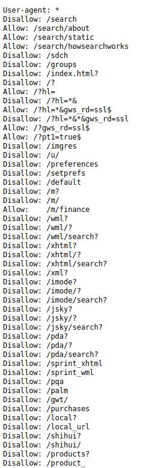
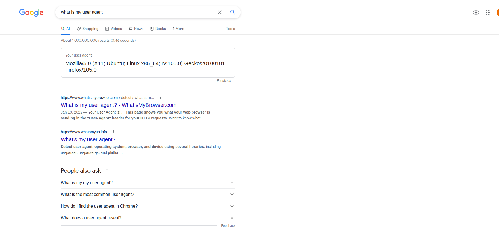

library(scrapex)
# List of links to make a request
school_links <- spanish_schools_ex()
# List where we will save the information for each link
all_schools <- list()
single_school_scraper <- function(single_link) {
# Before making a request, sleep 5 seconds
Sys.sleep(5)
# Perform some scraping
}
# Loop over each link to make a request
for (single_link in school_links) {
# Save results in a list
all_schools[[single_link]] <- single_school_scraper(single_link)
}9 Ethical issues in Web Scraping
Although quick to get up and running, web scraping is a delicate issue. It’s delicate because it involves grabbing information that is not yours and using it for your own purposes. In some respects that might be even contrary to the terms of services of the website. It also involves cluttering the servers of the website with potentially many requests, making the functioning of the website less optimal. In this chapter we’ll describe how you affect a website when you scrape it, how you can avoid problems with the website owners and how to figure out if indeed the website allows you to scrape that information.
9.1 Make your scraper sleep
Whenever you run a scraping script, your program makes a request to the website. A request means that you ask the servers behind the website to send you information. When I learned that scraping worked like that, I was completely shocked. I thought scraping was more like copying the content of the website into my local computer. Nothing harmless in that, right?
Well, to my surprise, I was making that request many times every day without knowing it. Scraping is the same as entering a website through a browser. That moment between when you hit enter to go to a website and when the information is actually displayed is the time it takes for the server behind the website to return all the content. That operation is important for a website. It involves requesting information, waiting for the server to return it and rendering it in your browser. A human is slow enough for a server to handle the requests it needs but imagine a human tried to enter a website 5 times per second continuously for 48 hours. That amounts to 864,000 requests. That’s a lot.
Big websites such as Google or Amazon have enough servers and throttle to handle millions of requests per second but most of the content on the internet does not. For that reason, it’s important that whenever you make a request to a website (calling read_html or read_xml), you add a system sleep to your scraper. In R you can do that with Sys.sleep(amount_of_seconds) where amount_of_seconds is the amount of seconds you want to sleep before making a request.
If we were scraping a website only once, making only a single request, adding a system sleep should not matter. What we want to avoid is making many requests in shorts amount of time. So for example, in our example in chapter @ref(spanish-school) we scraped information for several different schools. Each school that we scraped, meant making a request to the website. That’s a perfect example where want to sleep before making a request. So in R code, the skeleton code would look something like this with the system sleep:
We create a single function that works well for scraping a single school. Before we launch that to scrape all different schools, we add Sys.sleep(5) before scraping each school. This way, before making a new request, we’ll let the servers rest and avoid too many requests in such a short amount of time.
How many seconds should you wait? Sometimes the robots.txt file (see the section below) will tell you how many seconds per scrape you should wait. Other than that, there’s no real estimate. Depending on how many requests you make you’ll want to lower the number of seconds to 2 or 3. Multiplying the total number of websites you’ll scrape by the number of seconds you’ll sleep will give you a rough estimate of how much time your program will last.
As a rule of thumb, it’s always a good idea to limit your scraping to non-working hours such as over the evening. This can help reduce the chances of collapsing the website since fewer people are visiting websites in the evening.
9.2 Terms of services
When the General Data Protection Regulation (GDPR) came in effect in Europe, all websites needed to make sure every user agreed to their terms of services. These terms of services are lengthy and contain a lot of information for what the website can do with your data. However, it also contains information on what you can do with their data. For most internet users, this simply doesn’t matter. If you’re building a scraping program, however, this is important.
Whenever you intend to scrape a website, make sure to read the terms of services. If a website clearly states that web scraping is not allowed, you must respect that. For example, Facebook has a clause specifically on automated data collection:
You will not collect users’ content or information, or otherwise access Facebook, using automated means (such as harvesting bots, robots, spiders or scrapers) without our prior permission.
If a website explicitly prohibits you from scraping, you should not do it. Let me make that clear again: if the terms of services forbids you from scraping their website, you should not do it. It can have legal consequences.
If it’s not clear from the terms of services, contact the website and receive written confirmation from the website.
9.3 Copying information
Even if a website allows a user to scrape its contents, they might have some preferences on which sections of the website you can scrape and which are forbidden. For that there’s a standard file called robots.txt on nearly all website on the internet which tells you want parts of the website can be scraped. The robots.txt is just a convenient form for a website to tell you which URLs you can scrape; it will not enforce anything nor block you in any way. In all cases, you should follow the guidelines of the robots.txt.
The robots.txt file of most websites is located in the main URL. So for example, the robots.txt of Facebook is at www.facebook.com/robots.txt. Similarly, the robots.txt of Google can be found in google.com/robots.txt and looks like this:

It documents each URL of the Google website and it explicitly tells you which ones are allowed or disallowed. In this section we’ll use the robotstxt R package which makes it very easy to tell whether a website can be scrapable. For example, we can figure out if we can scrape the landing page of Wikipedia with this:
library(robotstxt)
paths_allowed("https://wikipedia.org")[1] TRUEThe TRUE statement tell us we can do it. Let’s see if we can scrape the Facebook homepage:
paths_allowed("https://facebook.com")[1] FALSEUsing paths_allowed you can provide any link to a website and it’ll automatically extract the robots.txt and figure out if you can scrape it. Before scraping any website, you should check whether the URL you want to scrape is allowed.
Another thing to be aware of is that robotstxt files often contain a field for Crawl-delay, suggesting the time you should wait between requests. You should keep that in mind for when you Sys.sleep in between requests.
9.4 Identifying yourself
Even if the website allows you to scrape the URL that you’re after, you need to be extra careful and identify yourself. That means that you need to give the website a clear identification of who is making those requests. This way the website can contact you if they find there’s something wrong with your requests, or even directly block you. Remember at all times: we’re scraping data that is not ours and we should be polite when grabbing that data. If the owner of the data considers that they don’t want to give you the data, they’re in their right to do so.
To identify ourselves we need something called a “User-Agent”. A User-Agent contains information about our computer and our browser. You can find your user agent googling “what is my user agent?”. Google will directly tell you what it is:

With that in hand, we just need to tell our scraper to incorporate that in each request. How do we do that? With the httr package. Below is the code to do it:
library(httr)
set_config(
user_agent("Mozilla/5.0 (X11; Ubuntu; Linux x86_64; rv:105.0) Gecko/20100101 Firefox/105.0")
)Notice how I added my name / email to the user agent? I often do that so websites can contact me in case they believe I’m breaking any of their terms of services or they want to know the purpose of my scraper. In any case, it’s just a way of being polite. In R the user agent can be set once at the top of the script. No need to include it anywhere else inside the scraper or inside a loop that scrapes many websites; the user agent is set globally and reused in all requests.